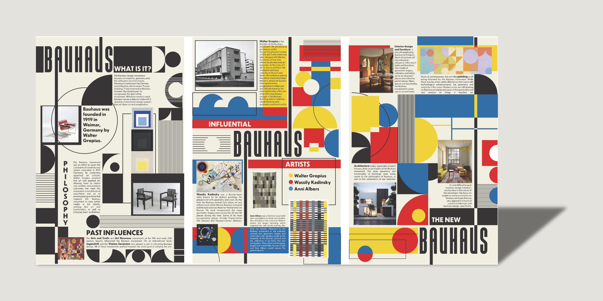
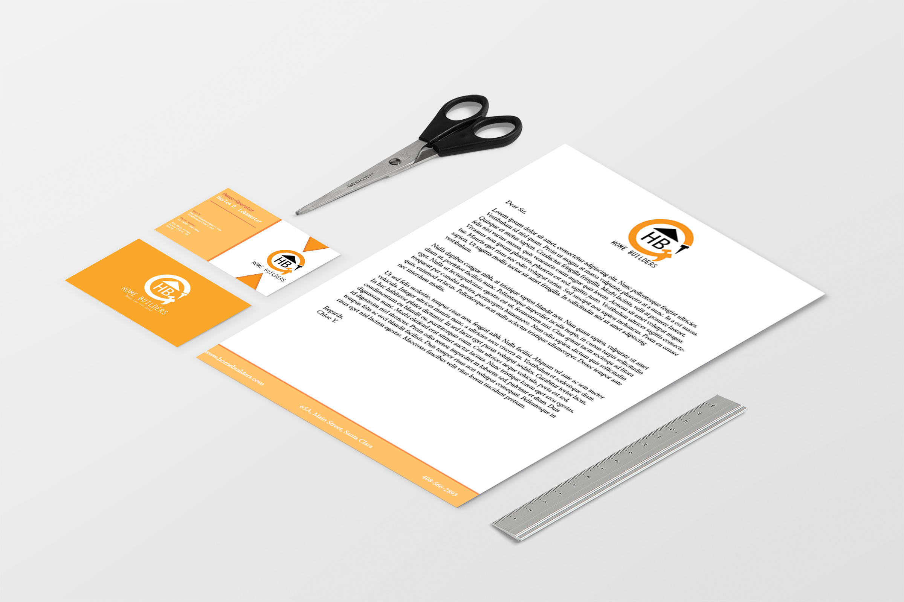
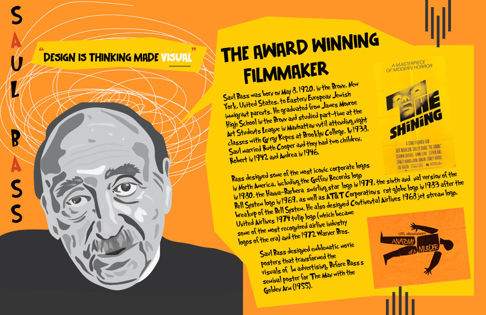
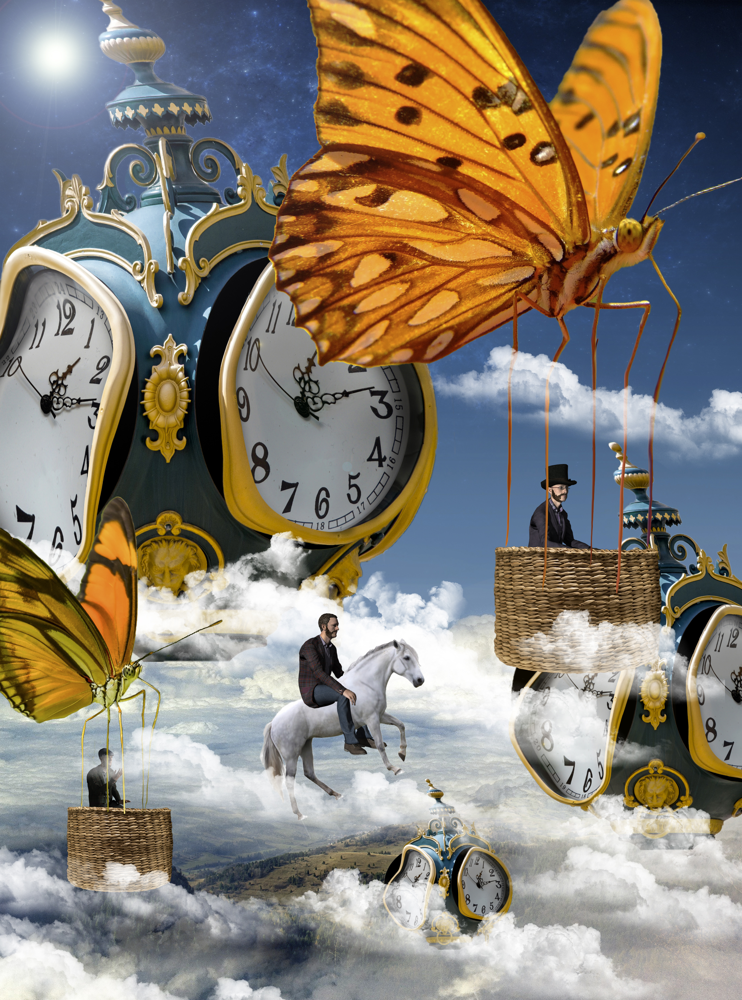

⋆˚꩜｡About Me
Hi! My name is Chloe Yap. I am a student at SJSU studying Digital Media Arts. I am interested in web development and design, and I love creating interactive and visually appealing websites. In my free time, I enjoy gaming, journaling, and reading.
My Work

Bauhaus Magazine
This is an editorial design project. It showcases a Bauhaus-inspired magazine.

Home Builder Project
This is a redesign of a home builder company. I included a cover letter, business cards, and postcards.

Saul Bass Poster
This is a poster design. It showcases a stylized version of Saul Bass and his description.

Dreamy Escape
This is a design that was inspired by Salvador Dali's surreal art artstyle.
Bauhaus Magazine
This is an editorial design project. It showcases a Bauhaus-inspired magazine.
Home Builder Project
This is a redesign of a home builder company. I included a cover letter, business cards, and postcards.
Saul Bass Poster
This is a poster design. It showcases a stylized version of Saul Bass and his description.
Dreamy Escape
This is a design that was inspired by Salvador Dali's surreal art artstyle.
Contact Me
Email: chloeyaphoyee@gmail.com
Phone: (123) 456-7890